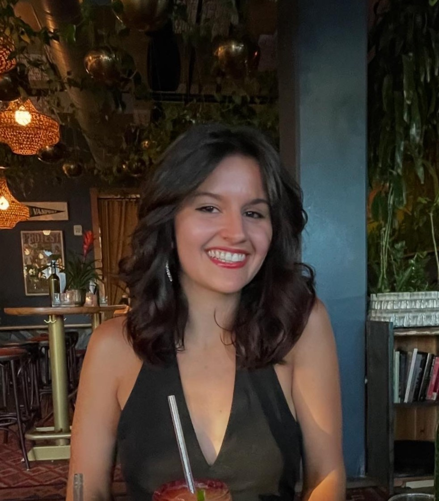
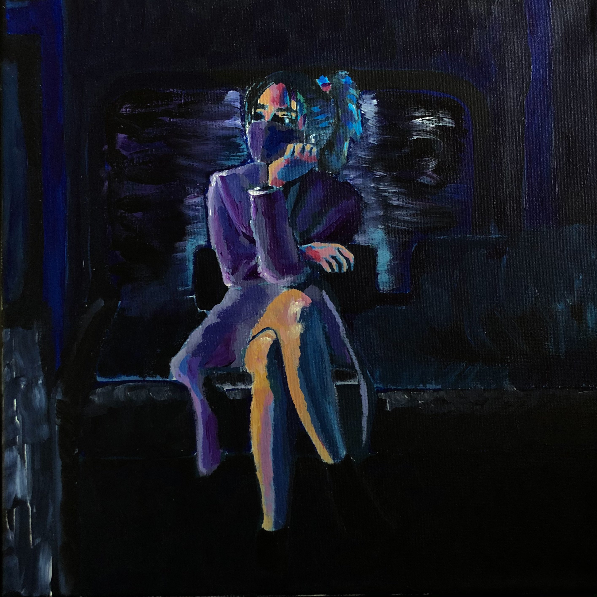
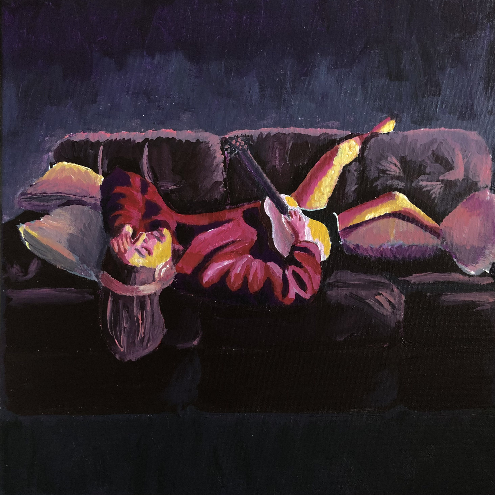
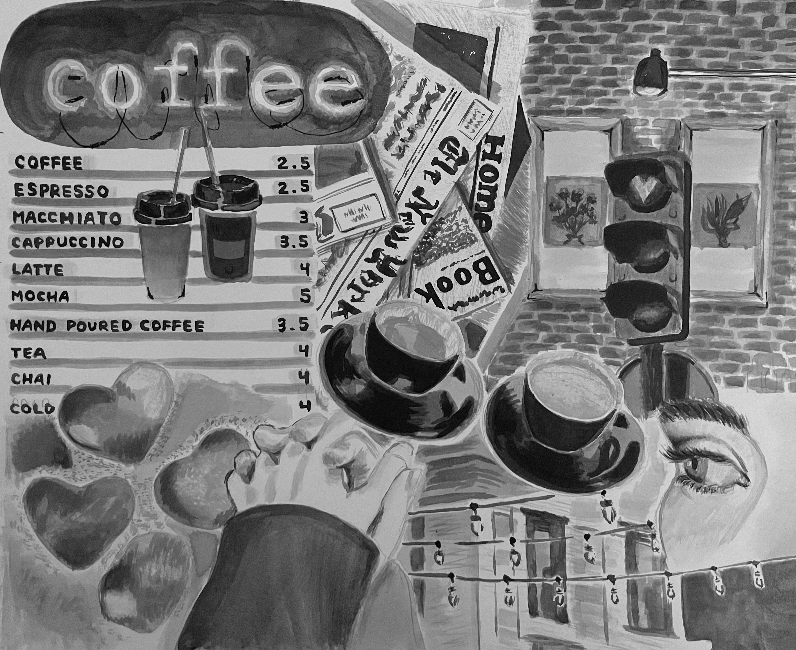
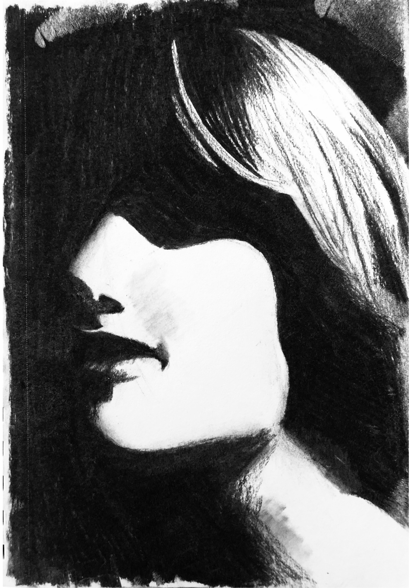
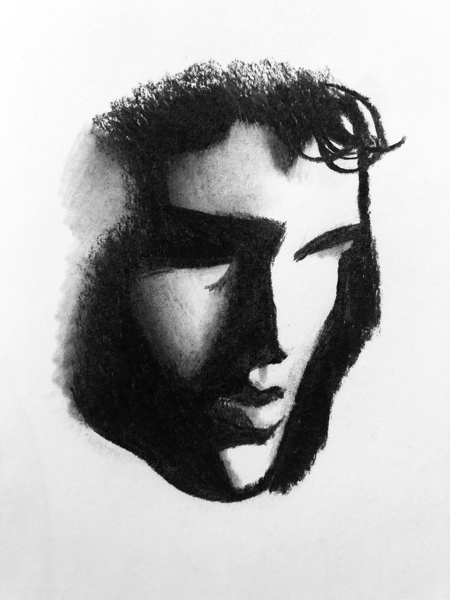
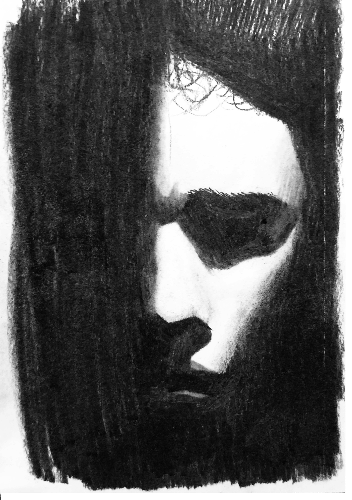
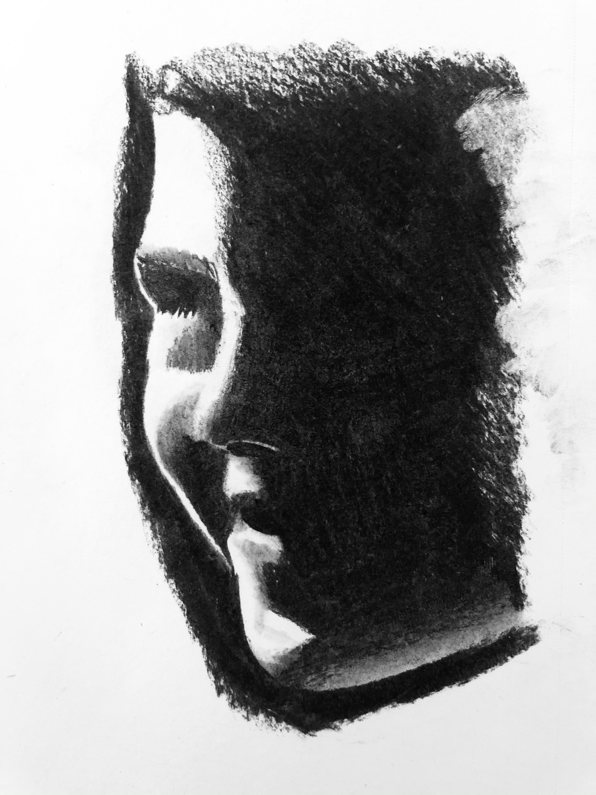
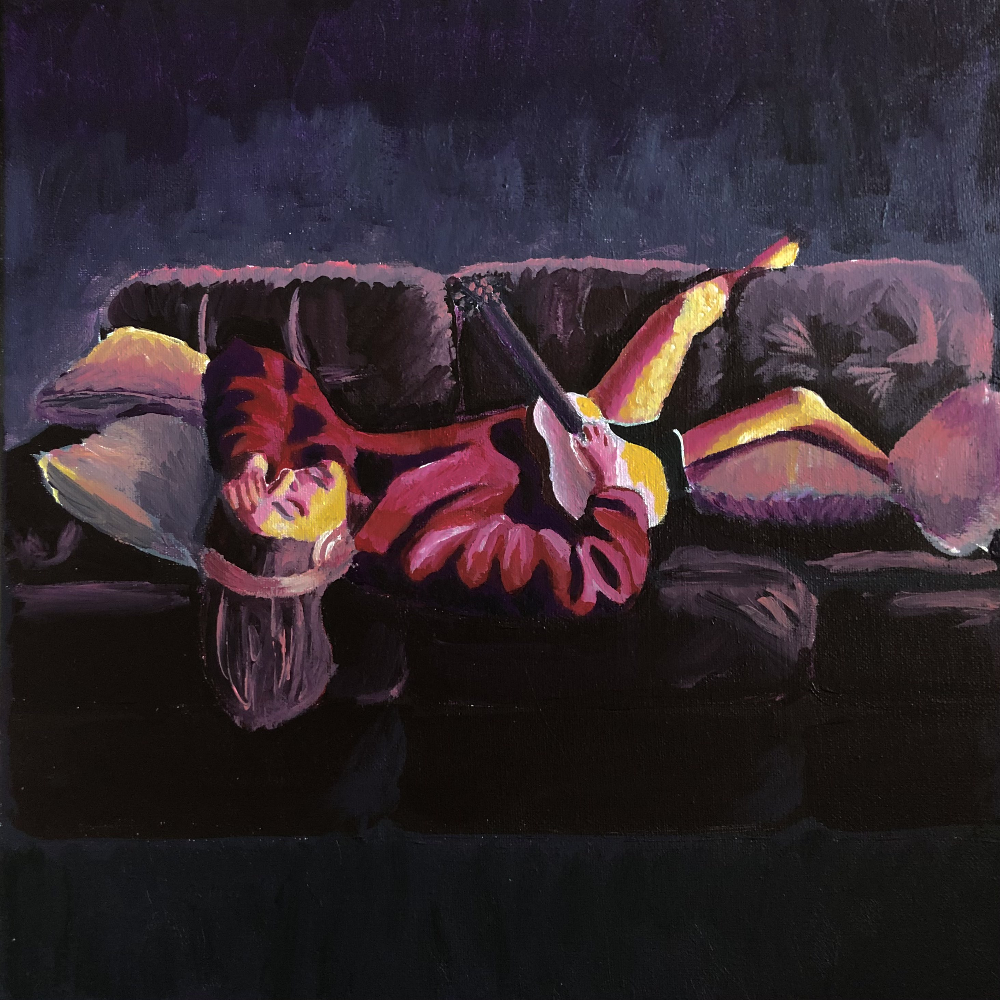
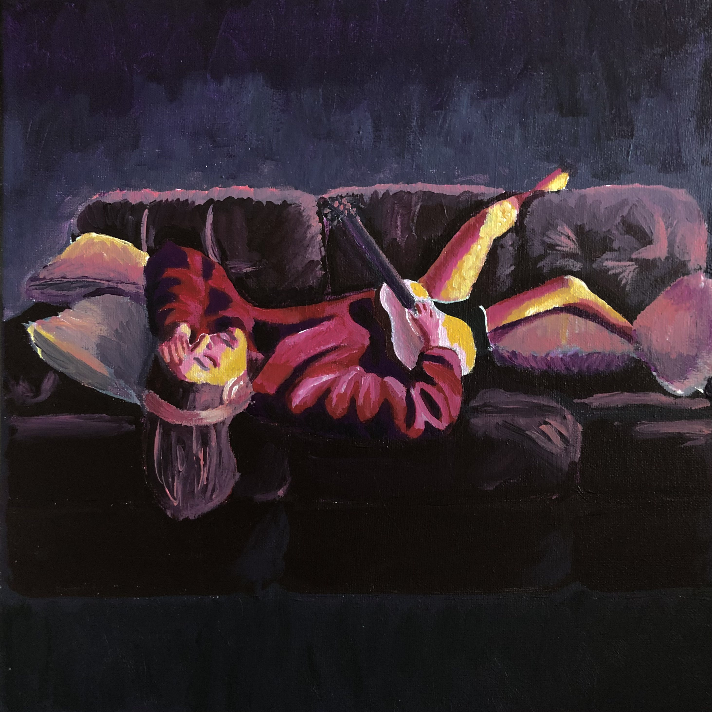

Welcome to my portfolio as an artist and computer scientist!
I studied computer science to pursue animation and visual arts software engineering. I have a strong
passion for the arts and traditional animated styles, including but not limited to character design,
motion and movement, and behavioral scoring.
~
I have a lot of experience with static art methods such as drawing and painting, but as I continue
my path as a computer science student, I am practicing my digital art skills to prepare for software
development and animation studio work.
Previews of my Digital Work
~
I enjoy working with digital art in my space time because of how advanced painting softwares
have become. As someone pursuing animation, I find working with digital softwares can be transitional
from a solid background in studio arts.
I work often in the studio to create art by hand because I often find the body movement during
art creation is helpful in fulfilling the piece.
I welcome you to my art portfolio!
Please explore my works in the menu tabs above to see a taste
of my range and style. Feel free to contact me about past, current, or future works! I am always
open to an art discussion.
About Me!

My name is Elizabeth Moniz. I was born and raised in Southern California and have spent several
years living in Arizona and Oregon. I study Computer Science and Studio Art as a double major to
pursue a career in animation. I am also working toward a minor in Mathematics along the way.
Professional Experience
Positions
Company
Films Worked On
Assistant Animator
LAIKA Studios, Deep Sky
Miscellaneous projects & short films
Lead Animator
Disney
Zootopia, CoCo, Tangled: Before Ever After
Software Engineering
Sony Pictures
Spider-man: Into The Spider-Verse
Personal Life
~ Journey through College ~
Right out of high school, I attended the University of Arizona for about 3 years in what I thought
was the path toward a computer engineering degree. I later discovered I had been put onto Electrical
Engineering by mistake, and I fled Tucson about a year after COVID's first lockdown.
Coming to Portland meant starting over, in some ways, and picking up where I left off in others.
I moved in with my best friend and attended Portland State University for a couple years before
deciding to finish my lower division credits at Portland Community College. I finished my requirements,
took a small detour to Berlin, Germany with the art department's travel abroad program, and have
returned to PSU to complete my long journey for my Bachelor's degree in Science and/or Fine Arts.
~ Personal Interests ~
Drawing and painting are some of my favorite pasttimes, whether it be for a quick home DIY project
or a small sketch on the river. My roommate once brought me home a large sheet of plywood years ago, and
to this day I spend time painting on it and over it with new creative or seasonal concepts.
I enjoy thrifting with my friends, spending time in the city, and dancing to latin and pop music.
When I get the chance, I love to be able to binge read inside; I can't deny I am a bit of a homebody.
Although, I do enjoy speaking to new people about film, pop culture, and their hottest take.
Previous Work & Experience
SKILLS & STRENGTHS
- In Computer Science -
Average Typing Speed up to 100 wpm
Experience with Data Entry
Experience with Technical Support
Ability to Learn New Software quickly
Discretion with Confidential Information
LANGUAGES
Fluent in C/C++/Python
Experience with HTML/CSS/Java/JavaScript
PROGRAMS
Highly Proficient in all Microsoft & Google Programs (Excel/Sheets, Word/Docs, Outlook/Gmail, Publisher, Powerpoint/Slides, Forms, etc.)
Proficient with Linux Terminal
Proficient in Archtics Ticketing System
Experience with all Adobe Software
- In Studio & Fine Arts -
Sketching, Drawing, Life Drawing, Painting, Digital, Scratchboard, Photography, Videography
MEDIUMS
Proficient with Charcoal, Graphite, Pastels, Colored Pencils
Proficient with Ink, Acrylic Paint, Watercolor, Oil Paint
DIGITAL WORK
Proficient in Adobe Photoshop, Illustrator, Lightroom, Krita Drawing & Krita Animation
Experience with Adobe Premiere Pro & Adobe Animate
PHOTOGRAPHY
Canon Powershot DSLR, Nikon Digital Coolpix, Disposable Film
Miscellaneous projects & short films, Voice Acting
Lead Animator
Disney
2013-2016
Zootopia, CoCo, Tangled: Before Ever After
Software Engineering
Sony Pictures
2015-2018
Spider-man: Into The Spider-Verse
EDUCATION
Degree
Institution
Attended
Highlights
High School Diploma
Great Oak High School
2000-2004
Passed 9 AP Classes & Exams in Math, Science, English, and Art Practice & History
Pursuing Undergraduate Degree
University of Arizona
2004-2006
Took 3 years of credits toward Bachelor's in Science and Fine Arts
Bachelor's Degree in Science/Fine Arts
Portland State Univerity
2006-2008
Earned my Undergraduate Degree & began internships at studios
~ Gallery ~
Untitled Series - est. 2020


Acrylic Paint on Canvas | Each 12" X 12"
Created during COVID, this series of paintings was made to depict the loneliness and looming despair of life during the pandemic.
Untitled Ink Collage - est. 2023

Black Ink on Drawing Paper | 16" X 20"
This was an earlier work done to play with values in ink and ink washes. I used elements of a coffee shop and citylife to create a
range of values and dimensions.
Light Studies - est. 2021




Charcoal on Drawing Paper | Each 9" X 12"
These were sketches done for a life drawing class I took where we wanted to honor shapes and contours in the face.
The expressions and features of the faces are carved with value rather than drawn using rendered facial elements.
Typography Project: Redesigning the Alphabet - est. 2021
Digital Art made with Krita & Photoshop | Each 3000 X 3000 px & 350 dpi
As part of a typography class I took in Tucson, I restyled the alphabet using a through-line theme: Taylor Swift songs. Each letter was stylized
after a song that has a matching title initial.
Digital Works Featured on the Home Page
Here in the Afterglow - est. 2021
Digital Art made with Krita | 2800 X 4100 px & 350 dpi
The inspiration for this piece came from a short romantic novel written about two male lovers set in 1970s San Francisco. The
title was inspired by the Taylor Swift song from the album Lover, which helped set the color scheme of the work.
Concrete Company - est. 2022
Digital Art made with Krita | 6000 X 7500 px & 500 dpi
This work was developed as a passion project to understand how to create ambiance and layered backgrounds with digital media.
The somewhat monochromatic palette was a personal challenge to avoid using colors to texturize the piece or to indicate where objects are in space.
Memories Re-Draw - est. 2022
Digital Art made with Krita | 2800 X 3550 px & 350 dpi
The prompt for this piece was to re-create a book cover, and my inspiration was Lang Leav's incredible poetry novel Memories.
I connected to her poetry early on and have developed a personal collection of her work. I often use my copies as sketch books and use her poems as
drawing prompts.
Contact Me
If you have any questions, inquiries, requests, or comments, please leave your information below. If you have any recommendations,
please include a link to the artist's work as well! I am always open to new inspo.
I am not currently taking commissions but am open to discussion, depending on the project.
 
